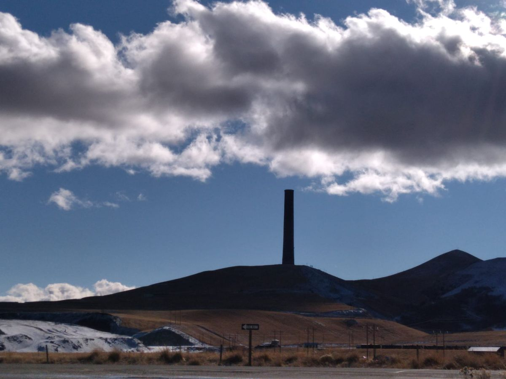
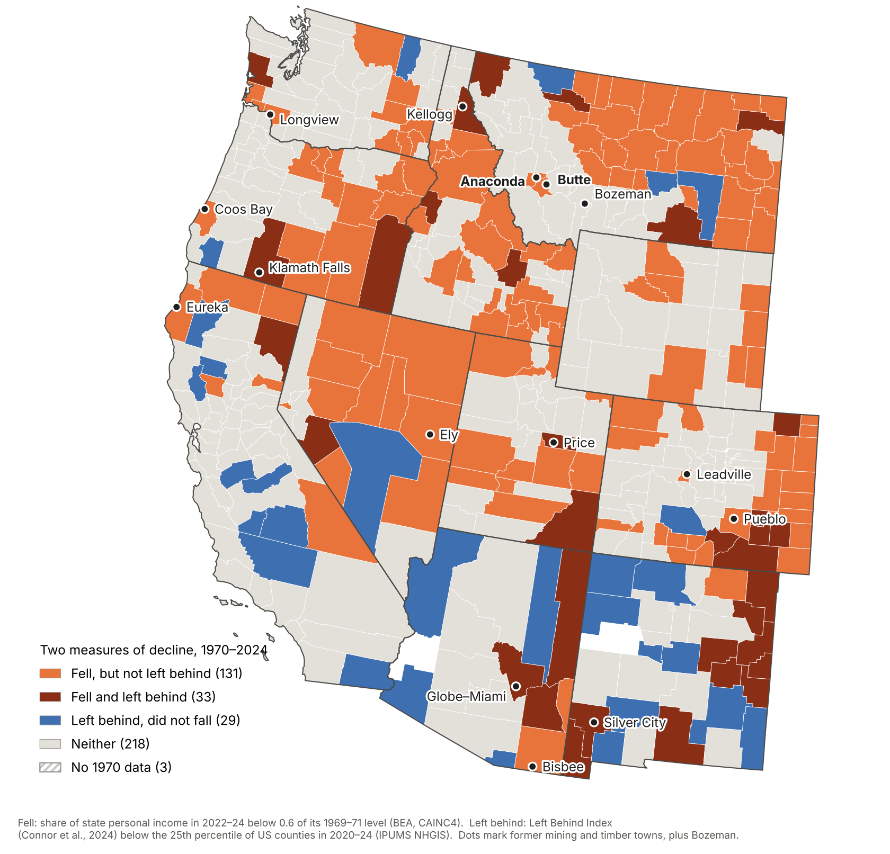

Associate Professor of Economic History and Institutional Economics, University of the Basque Country.
Saitua’s research explores economic history and institutional change. His work has appeared in journals such as Agricultural History, Revista de Historia Industrial and Rural History.
Across the American West, mining, smelting and timber towns that once anchored their regional economies have lost much of their weight. Yet most of them do not appear on today’s maps of “left-behind places”. Left-Behind West asks why, and what that gap tells us about how regional decline is measured.

All that remains of the Anaconda Copper Mining Company’s smelter: its smoke stack in Anaconda, Montana, one of the tallest masonry structures in the world. Photo: Iker Saitua, 20 November 2021.
The question
Current indices of left-behind places rank counties by income, poverty, unemployment and education at a point in time. They capture disadvantage. They do not capture a place’s loss of position within its regional economy: a fall that can happen while those who remain keep close to average incomes, because many others have left.
What we do
Reconstruct the Left Behind Index of Connor et al. (2024) for every US county from 1970 to 2020–24.
Measure each county’s share of its state’s personal income every year since 1969.
Use economic and institutional history to explain how resource places lost their position: who captured mineral rents, how economies locked into one company and one metal, and where states placed the institutions that new activities need.
First results
In Montana, only four of the 33 counties that lost more than 40% of their share of state income since 1970 are classified as left behind today. Butte, for a century the state’s mining centre, halved its weight but never fell below the 40th percentile of US counties. Across the eleven western states the pattern repeats: of 164 counties that fell, only 33 are left behind.

Two measures of decline in the American West, 1970–2024. Orange counties lost more than 40% of their share of state personal income but are not classified as left behind. Sources: IPUMS NHGIS; US Bureau of Economic Analysis. Map by Iker Saitua.
Team
Iker Saitua and Andoni Kortazar, University of the Basque Country (EHU)
Publications
“Falling without being left behind? Copper and the measurement of regional decline in Montana, 1970–2024”
My teaching explores how institutions, incentives, political choices, and historical context shape economic outcomes. I teach in English, Basque, and Spanish at EHU.
Department of Public Policy and Economic History · Faculty of Economics and Business (Sarriko) · University of the Basque Country (EHU) · Bilbao, Spain